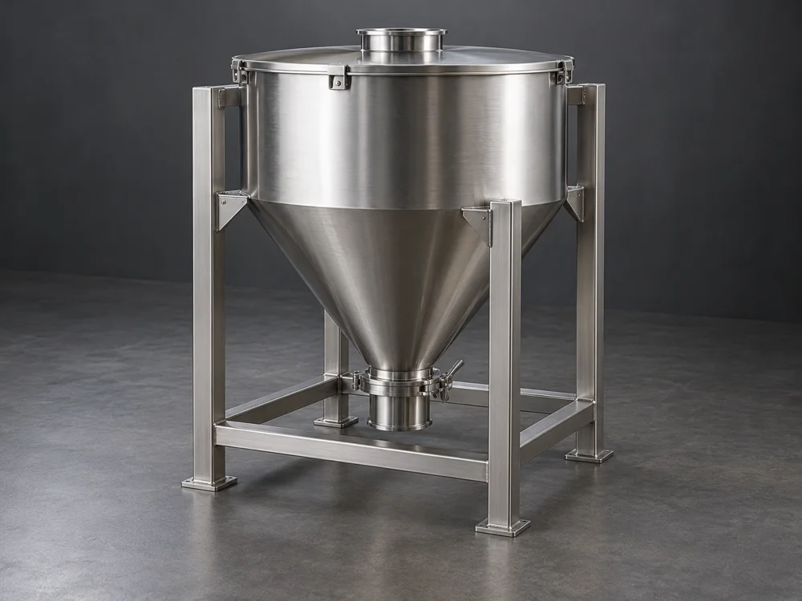

Lāzergriešana
Lokšņu metāla griešana ar CNC lāzeriekārtu. Detaļas atbilstoši jūsu rasējumiem un projekta prasībām.


Kvalitatīva metāla griešana industriāliem risinājumiem. No jūsu rasējuma līdz gatavai detaļai.
Pilns projekta realizācijas cikls — no idejas un rasējuma izstrādes līdz gatava izstrādājuma izgatavošanai.
Strādājam ar klienta skicēm, nepieciešamības gadījumā izstrādājam tehniskos rasējumus un sagatavojam ražošanas dokumentāciju.
Lokšņu metāla griešana ar CNC lāzeriekārtu. Detaļas atbilstoši jūsu rasējumiem un projekta prasībām.
Lokšņu metāla formēšana ar BAYKAL presi. No atsevišķiem leņķiem līdz sarežģītām detaļām.
Nerūsējošā tērauda detaļu un metāla konstrukciju savienošana. Piemērotu metodi saskaņojam jūsu projektam.
Tvertnes, rāmji, darba galdi un individuālas konstrukcijas. Izgatavojam pēc klienta rasējumiem un specifikācijas.
Nerūsējošā tērauda izstrādājumi pārtikas un farmācijas ražošanai, rūpniecībai un ikdienas vajadzībām. Izstrādājam un pielāgojam konstrukcijas atbilstoši jūsu prasībām.
 Ilustratīvs piemērs
Ilustratīvs piemērs Ilustratīvs piemērs
Ilustratīvs piemērsTvertnes pārtikas un farmācijas ražošanas uzdevumiem, arī pulveru apstrādei.
Pasūtīt pēc rasējuma Ilustratīvs piemērs
Ilustratīvs piemērs Ilustratīvs piemērs
Ilustratīvs piemērs Ilustratīvs piemērs
Ilustratīvs piemērs Ilustratīvs piemērs
Ilustratīvs piemērs
Ilustratīvs piemērs Ilustratīvs piemērs
Ilustratīvs piemērsProduktu attēli ir ģenerētas koncepciju ilustrācijas, nevis pabeigti BCS Steel projekti.
Iekārtas jūsu projekta izgatavošanai. Konkrētas apstrādes iespējas saskaņojam pēc projekta izvērtēšanas.

Lāzergriešana
Iekārtas tehniskie parametri tiek saskaņoti konkrētajam projektam.

Metāla locīšana
TIG un lāzera metināšana
 Uzņēmuma ražošanas detaļas
Uzņēmuma ražošanas detaļasBCS Steel specializējas metālapstrādē un individuālu metāla izstrādājumu izgatavošanā. Mēs piedāvājam lāzergriešanu, lokšņu metāla locīšanu, TIG un lāzera metināšanu, kā arī dažādu nerūsējošā tērauda konstrukciju un izstrādājumu ražošanu pārtikas, farmācijas un citām rūpniecības nozarēm, kā arī privātpersonām.
Katru projektu sākam ar klienta vajadzību izvērtēšanu. Strādājam gan ar gataviem tehniskajiem rasējumiem, gan klienta skicēm vai idejām. Nepieciešamības gadījumā sagatavojam tehniskos rasējumus un izstrādājam konstrukcijas risinājumu, pēc tam nodrošinot izstrādājuma izgatavošanu.
Varat nosūtīt gatavu tehnisko rasējumu, skici vai vienkārši aprakstīt savu ideju. Nepieciešamības gadījumā sagatavosim tehnisko rasējumu un piedāvāsim piemērotāko izgatavošanas risinājumu.
Apspriest projektuProduktu attēli ir ģenerētas koncepciju ilustrācijas, nevis pabeigti BCS Steel projekti.
Pastāstiet par projektu, materiālu un daudzumu. Varat sākt ar rasējumu, skici vai vienkārši ideju — gatavs tehniskais rasējums nav obligāts.